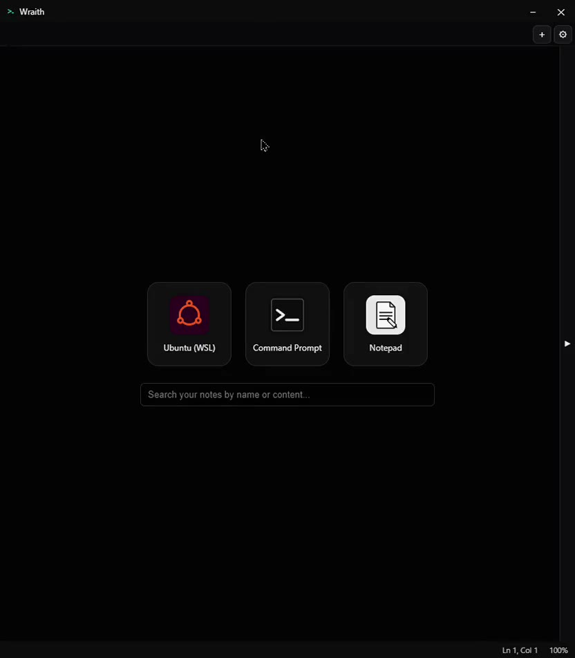
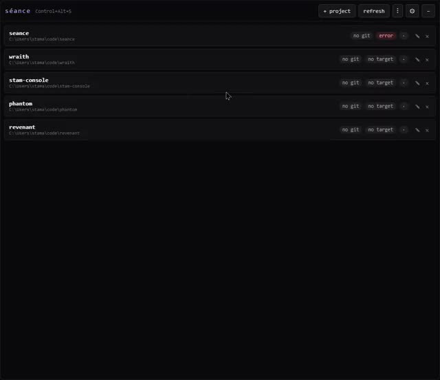
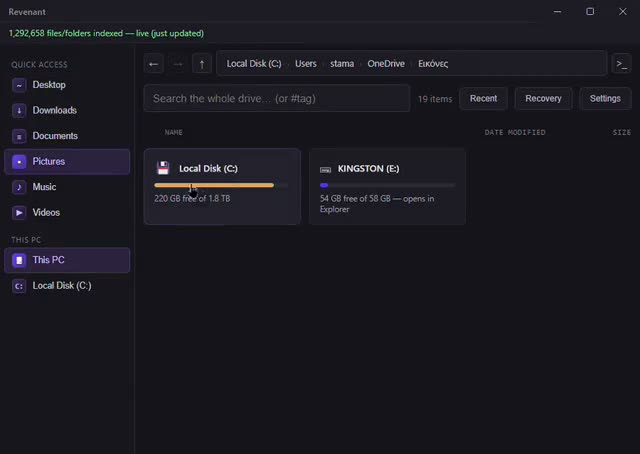
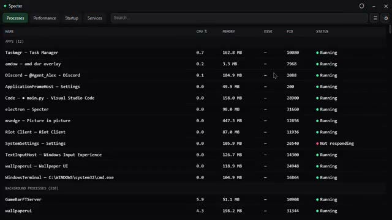
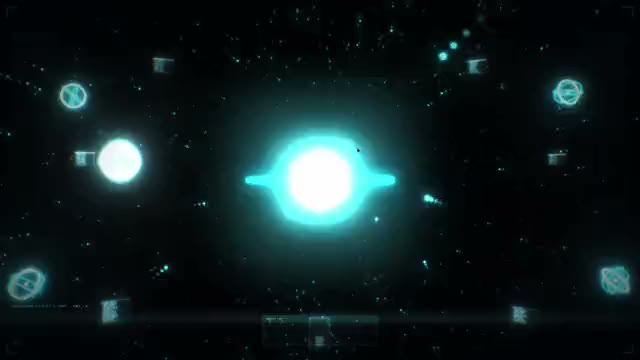
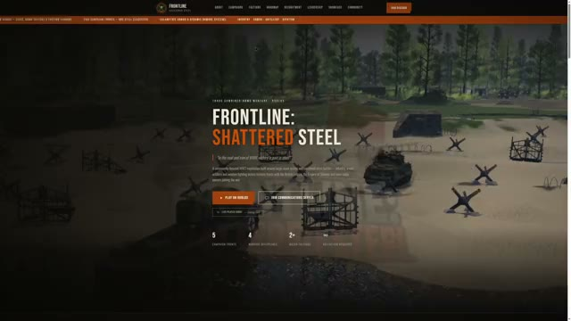

Discord bots, desktop apps, web apps, and the databases behind them — built end to end, by one person.






A transparent Task Manager replacement — Processes, Performance, Startup and Services in one see-through window, with controls stock Task Manager never exposed.
No jargon required. Describe the problem and I'll take it from there.
What it actually takes to build — and if I'm not the right person, I say so.
Frontend to backend, until it's live and working, not handed off half done.
Small, well-scoped projects are the easiest ones to say yes to.